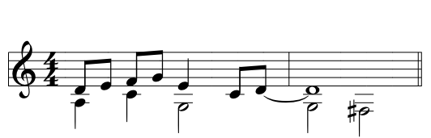

Cavatina
Cavatina is a font family and a language for typesetting music notation with a focus on input speed. The fonts can either be used inside a rich-text editor with support for advanced typographic features, or included in a webpage.
The project is now open source and the fonts—released under the MIT license—can be downloaded at no cost. A total of eleven keyboard layouts are supported, covering six different languages. For information about the installation visit the GitHub page.
To learn more about Cavatina, you can do the short tutorial or check out the documentation for a more detailed overview.
© 2019 Alexis Luengas